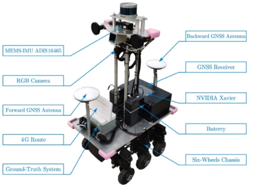
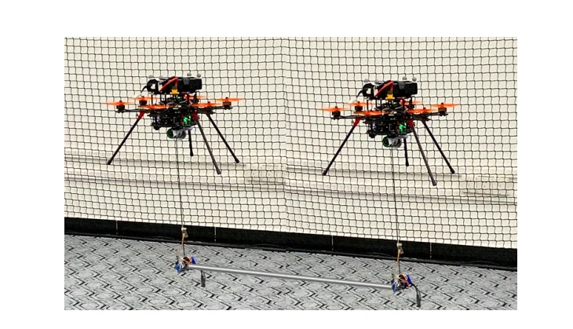
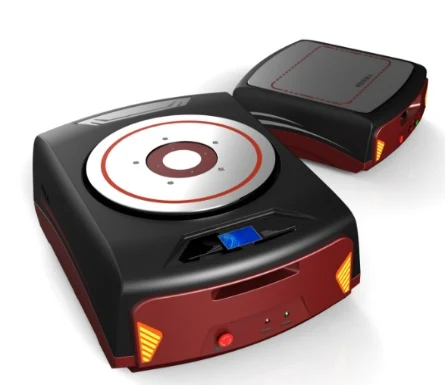

多源融合导航与无人系统
围绕无人系统的高精度定位与导航，研究多冗余 IMU 融合、视觉惯性里程计和动态特征处理，为复杂物流环境中的移动平台提供方法支撑。
研究资料：实验室介绍PPT第9页
实验室研究资料 · 2026年1月

围绕无人系统的高精度定位与导航，研究多冗余 IMU 融合、视觉惯性里程计和动态特征处理，为复杂物流环境中的移动平台提供方法支撑。
研究资料：实验室介绍PPT第9页

结合驾驶模拟、眼动和脑电平台，研究驾驶意图、认知状态及人机交互，关注自动驾驶接管与系统测试评价。
研究资料：实验室介绍PPT第5、10页

面向动态环境中的多机吊运、空地配送和协同搬运，研究运动规划、避障、姿态队形控制与装备实现。
研究资料：实验室介绍PPT第12页

围绕仓储拣选场景，研究多机器人无冲突路径规划、物流 AGV 协同调度和多车联动作业。
研究资料：实验室介绍PPT第13—14页